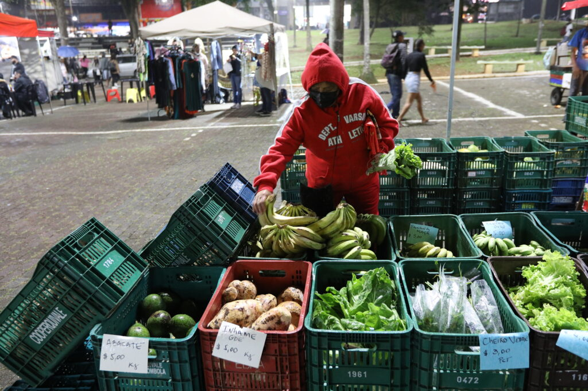

Sobre Feiras Agroecológicas
As feiras agroecológicas promovem a venda de produtos orgânicos e sustentáveis diretamente do produtor ao consumidor. Elas são um importante meio de fortalecer a economia local e garantir alimentos saudáveis.

As feiras agroecológicas promovem a venda de produtos orgânicos e sustentáveis diretamente do produtor ao consumidor. Elas são um importante meio de fortalecer a economia local e garantir alimentos saudáveis.

Encontre uma feira agroecológica perto de você: